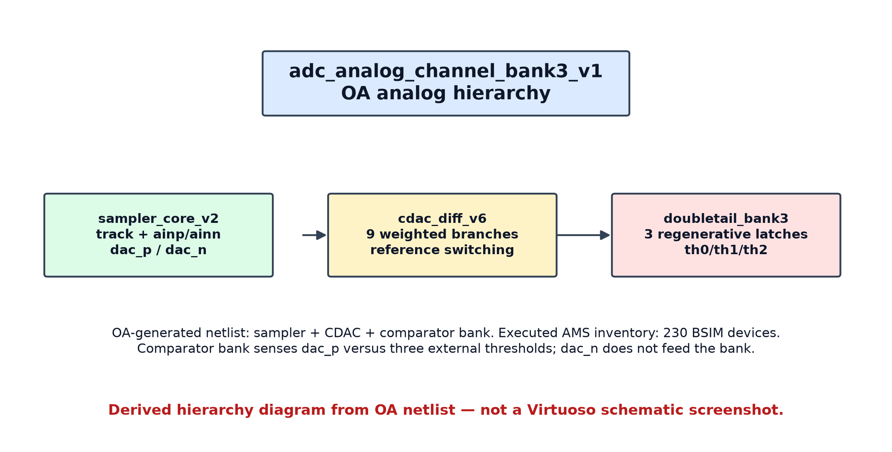
OA hierarchy — reconstructed from actual generated netlist
Derived diagram; not a Virtuoso screenshot.
Source: results/physical/adc_analog_channel_bank3_netlist/ocean_output/spectre/schematic/netlist/input.scs · 230 BSIM devices in AMS inventory.
Open full-resolution image
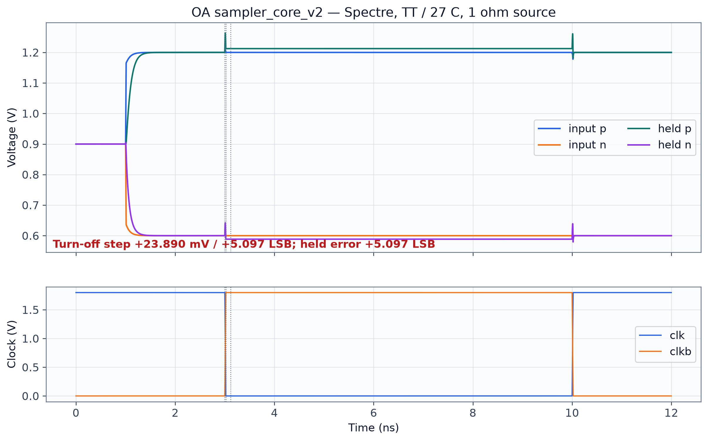
Sampler acquisition and hold
OA SCL180 Spectre vectors; held error +5.097 LSB.
Source: results/physical/sampler_core_v2_OA_R1ohm/waveforms.npz · OA transistor-level Spectre.
Open full-resolution image
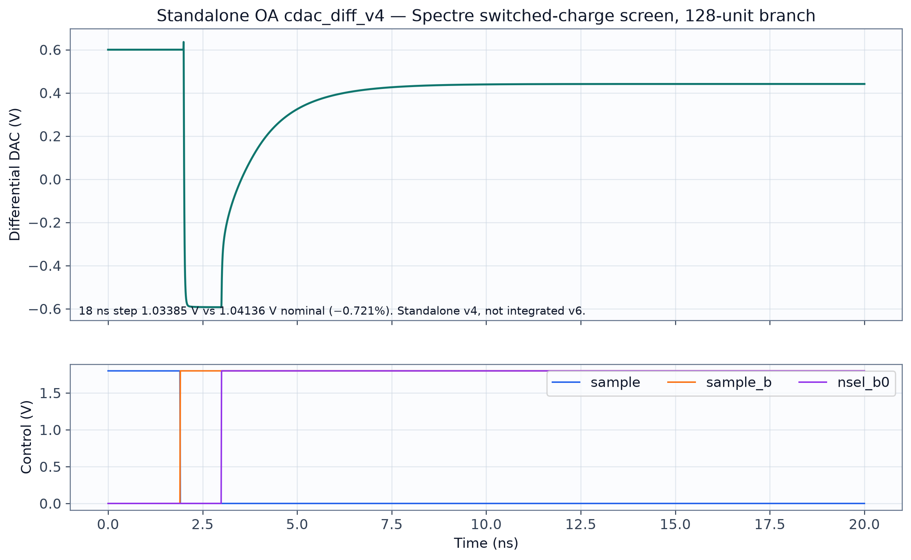
Standalone CDAC v4 switched response
Real Spectre data; this is not integrated v6.
Source: results/physical/cdac_diff_v4_spectre/bit0/waveforms.npz · standalone OA CDAC Spectre.
Open full-resolution image
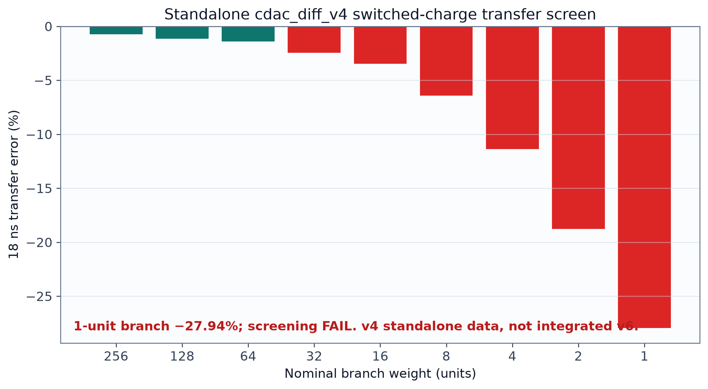
CDAC v4 branch transfer screen
Standalone transistor-level Spectre; screening fails at small weights.
Source: results/physical/cdac_diff_v4_spectre/weight_transfer.csv.
Open full-resolution image
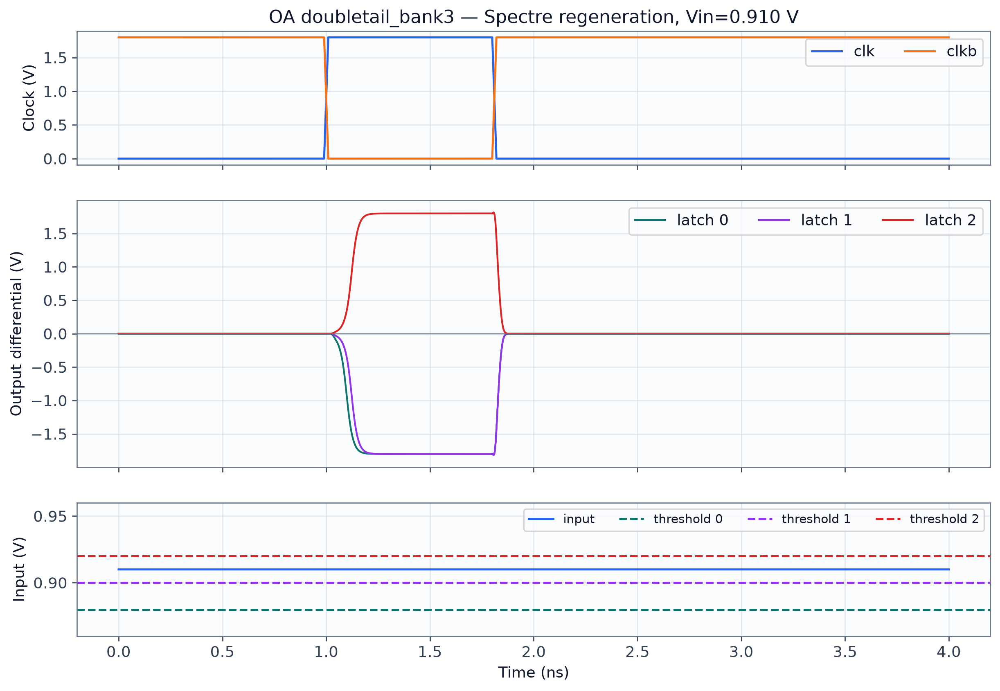
Comparator bank regeneration
Real standalone Spectre waveform vectors.
Source: results/physical/comparator_bank3_spectre/case2_vin910mV/waveforms.npz.
Open full-resolution image
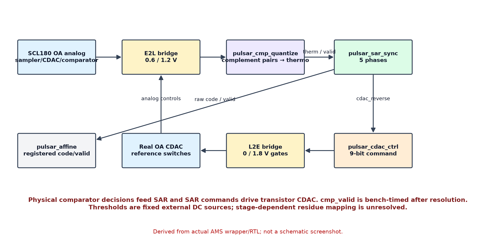
AMS feedback dataflow
Derived from wrapper and RTL; not a screenshot.
Source: results/raw/first_integrated_adc_capture/cases/zero/ams_feedback_top.vams and digital/rtl/.
Open full-resolution image
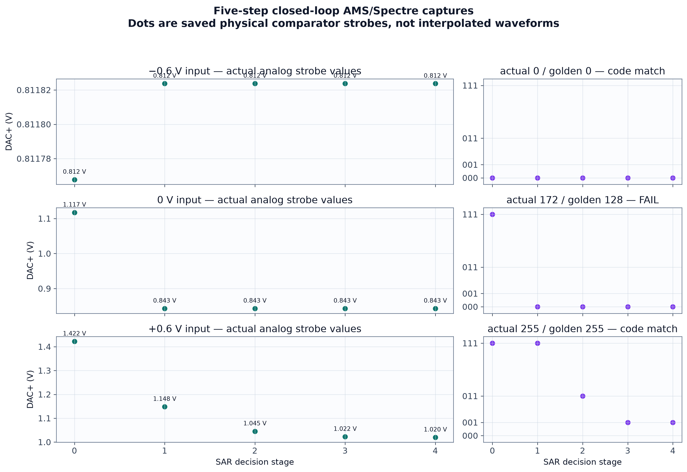
Three five-decision AMS transactions
Actual transaction strobes; 0 V case is 172 vs golden 128.
Source: results/raw/first_integrated_adc_capture/case_summary.csv and per-case xrun logs.
Open full-resolution image
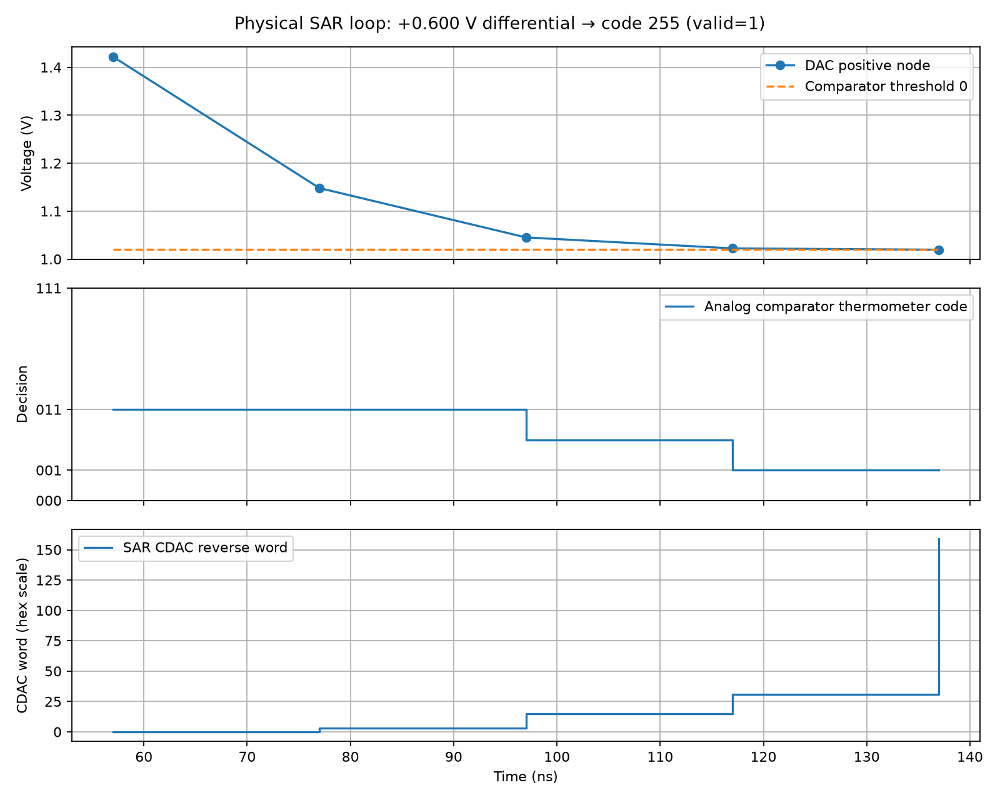
Saved positive-input five-decision timing plot
Existing capture figure: DAC+ sample, thermometer decisions and CDAC word across the transaction.
Source: results/raw/first_integrated_adc_capture/conversion_timing.png; capture.json; stages.csv. Final code 255, valid=1; sequence differs from golden.
Open full-resolution image
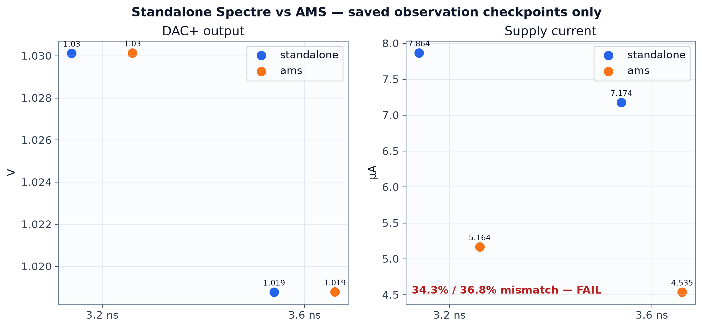
Standalone / AMS analog checkpoints
Saved observation points; current equivalence FAIL.
Source: results/physical/ams_oa_source_flow_20261013/comparison_edge_aligned_reltol1e-5.json.
Open full-resolution image
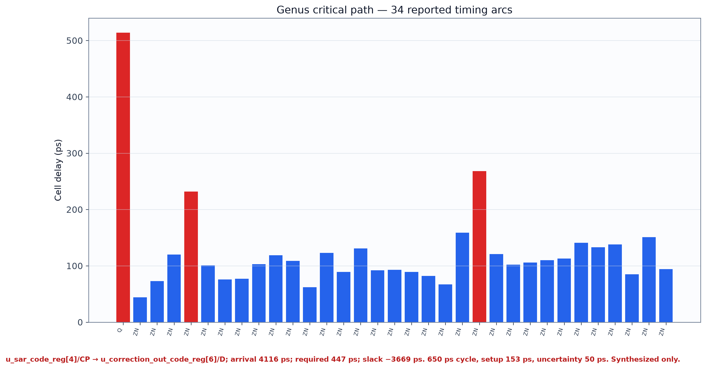
Genus critical path
Saved synthesis report, not placed-and-routed timing.
Source: results/digital/channel_wrapper_20261013/timing.rpt · Genus 21.14.
Open full-resolution image
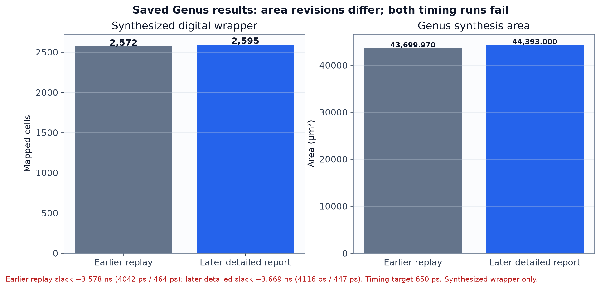
Genus area and timing summary
Both saved area revisions and timing failures are shown.
Source: results/digital/channel_wrapper_20261013/replay.json; area.rpt; timing.rpt.
Open full-resolution image